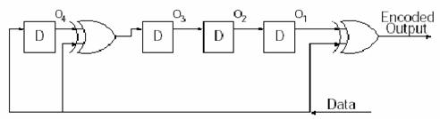
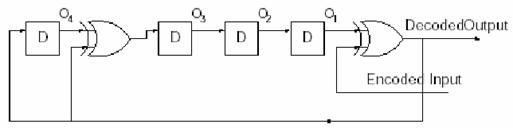

|
The Cyclic Encode/Decode Simulator
# Introduction When you send a sequence of bits from point A to point B, you want to know that it will arrive without error. A common form of insurance is the parity bit, attached to 7-bit ASCII characters to put them into 8-bit format. The parity bit is chosen so as to make the total number of one-bits (versus zero-bits) either always even (even parity or always odd (odd parity . Any single bit error in a character will thereby be detected. When errors are sufficiently rare, and do not occur closely bunched in time, use of parity provides sufficient error detection. Unfortunately, in real situations, a single noise event is likely to disrupt more than one bit. Since the parity bit has two possible values (0 and 1), it gives, on average, only a 50% chance of detecting an erroneous character with more than one wrong bit. That probability, 50%, is not nearly good enough for most applications. Most communications protocols use a multibit generalization of the parity bit called a cyclic redundancy check or CRC. In typical applications the CRC is 16 bits long (two bytes or two characters), so that the chance of a random error going undetected is 1 in = 65536. Moreover, M-bit CRCs have the mathematical property of detecting all errors that occur in M or fewer consecutive bits, for any length of message. Since noise in communication channels tends to be bursty, with short sequences of adjacent bits getting corrupted, this consecutive-bit property is highly desirable. So the goal of this project is that we know about the cyclic redundancy check code scheme and simulate it.
# Objective ▪ To show the intermediate step in encoding and decoding, and allow the use of different encoding polynomials. ▪ To find out whether the used one is a generator polynomial or not.
# Theorem Now let us briefly discuss the theory of CRCs. After that, we will give implementations of various (related) CRCs that are used by the official. The mathematics underlying CRCs is polynomials over the integers modulo 2. Any binary message can be thought of as a polynomial with coefficients 0 and 1. For example, the message 1100001111 is the polynomial . Since 0 and 1 are the only integers modulo 2, a power of x in the polynomial is either present (1) or absent (0). A polynomial over the integers modulo 2 may be irreducible, meaning that it can not be factored. A subset of the irreducible polynomials are the primitive polynomials. These generate maximum length sequences when used in shift registers. The polynomial is not irreducible: = (x+1)(x+1), so it is also not primitive. The polynomial is irreducible, but it turns out not to be primitive. The polynomial is both irreducible and primitive. An M-bit long CRC is based on a particular primitive polynomial of degree M, called the generator polynomial. The choice of which primitive polynomial to use is only a matter of convention. Method of checking the generator polynomial g(x) is the generator polynomial for a linear cyclic code of length n if and only if g(x) divides 1 + xn.
What this is saying is
that to find generator polynomial g(x) If n is the length of the code the length of the code, k = n - deg(g(x)) where deg(g(x)) denotes the degree of g(x). Example
To Find a generator
polynomial and for a code of length n = 15 which will encode messages of
length k = 7. Then encode the word [0110110]. If we are to find a
generator for a code of length 15 to encode messages of length 7. The polynomial x15 + 1 can be written as x15 + 1 = (1 + x)(1 + x + x2)(1 + x + x2 + x3 + x4)(1 + x + x4)(1 + x3 + x4) so we can choose g(x) = (1 + x + x2 + x3 + x4)(1 + x + x4) = 1 + x4 + x6 + x7 + x8. Using this generator polynomial we can create a code with minimum distance of 5 and thus correct 2 errors. Now that we have a generator polynomial we can use it to encode our message, [0110110]. The polynomial corresponding to this vector is x + x2 + x4 + x5. To encode we multiply this by g(x). (x + x2 + x4 + x5)(1 + x4 + x6 + x7 + x8) = x + x2 + x4 + x6 + x7 + x8 + x9 + x13 Thus the word [0110110] is encoded to the codeword [011010111100010].
# Implementation In this project, I use the Java language for implementing the codes. So you can find the results in Here!.
Encoding scheme  Multiplication can be implemented by shift registers and exclusive-or gates, so in my project, I also use this scheme for encoding. (See ccStatus.java in Sources section) Decoding Scheme  Division or decoding can be done by multiplication in the feedback loop, of course this benefit of this scheme is re-usability of the encoding scheme, so that we can reduce many of duplicating codes. If no bit errors exist we will receive E(X) and calculate D(X) by D(X)=E(X)/G(X), reminder is zero. Example: E(X)=D(X)G(X)=D(X)() = D(X)+D(X)() D(X)=-E(X)+ D(X)()=E(X)+ D(X)() Checking the generator polynomial. If and only if g(x) divides 1 + xn, then g(x) is the generator polynomial for a linear cyclic code of length n. So, I temporarily set the Input bit(k) and Code bit(n) in decoding mode, and then check whether g(x) can divide 1+ xn or not. Finally, if the reminder is zero, then it is the generator polynomial. |